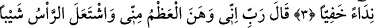
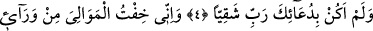
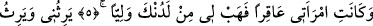
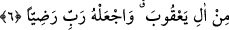

HZ. ZEKERİYYA’NIN DUÂSI
Rahmân ve Rahîm (olan) Allâh’ın adıyla
1. Kâf Hâ Yâ Ayn Sâd.
2. (Bu) Rabbi’nin, Zekeriyya kuluna rahmetinin anılmasıdır.
3. Hani o, gizli bir sesle Rabbine niyaz etmişti:
4. Demişti ki: “Rabb’im! Benden (vücudumdan), kemiklerim zayıfladı, saçım
başım ağardı. Ve ben, Rabbim, sana (ettiğim) duâ sayesinde hiç bedbaht olmadım.
5. Doğrusu ben, arkamdan iş başına geçecek olan yakınlarımdan endişe ediyorum.
Karım da kısır. Tarafından bana bir veli (oğul) ver.
6. Ki o bana vâris olsun; Yakuboğulları’na da vâris olsun. Rabbim, onu rızana
lâyık kıl!
“Kâf Hâ Yâ Ayn Sâd”, bu surenin adıdır. Yani bu sûre Kâf Hâ Yâ Ayn Sâd isimli
sûredir. Bu harfler henüz zikredilmeden “bu” diye işaret edilmesi doğrudur. Çünkü bu
harfler zikredilmek üzere olması îtibariyle hazırda bulunan ve görülen şey hükmünde
sayılmıştır. Nitekim (bir kimsenin satın almak üzere olduğu bir şey hakkında) “Bu,
falancanın satın aldığıdır.” denir. Nitekim el-İrşâd’da böyle geçmektedir.
Şeyh Tefsîri’nde bu harflerle ilgili olarak şöyle der: Bunlar Allah Teâlâ’nın ettiği bir
yemindir. Ya da Allâh’ın esmâ-i hüsnâsından bir isimdir. Nitekim bâzı dûalarda: “Yâ
Kâf Hâ Yâ Ayn Sâd”, “Yâ Hâ Mim Ayn Sin Kâf” demeleri buna delâlet eder. Ya da
bunların her biri, Allâh’ın yüce sıfatlarından birine işâret eden harflerden oluşmuştur.
Buna göre “Kâf”, Kerîm ve Kebîr; “Hâ”, Hâdî; “Yâ”, Rahîm; “Ayn”, Alîm ve Azîm;
“Sâd” ise Sâdık sıfatına işaret etmektedir. Ya da bu ifâdenin mânâsı şöyledir: “Allah
Teâlâ yarattıklarına yeten, kullarını hidayete erdirendir. O’nun kudret eli, kulların elinin
üstündedir. Yarattıklarını çok iyi bilen ve vaadinde doğru olandır.”
Kâşifî şöyle demiştir: “Mevâhib-i sûfî-âbâd’da Şeyh Rukneddîn Alâüddevle